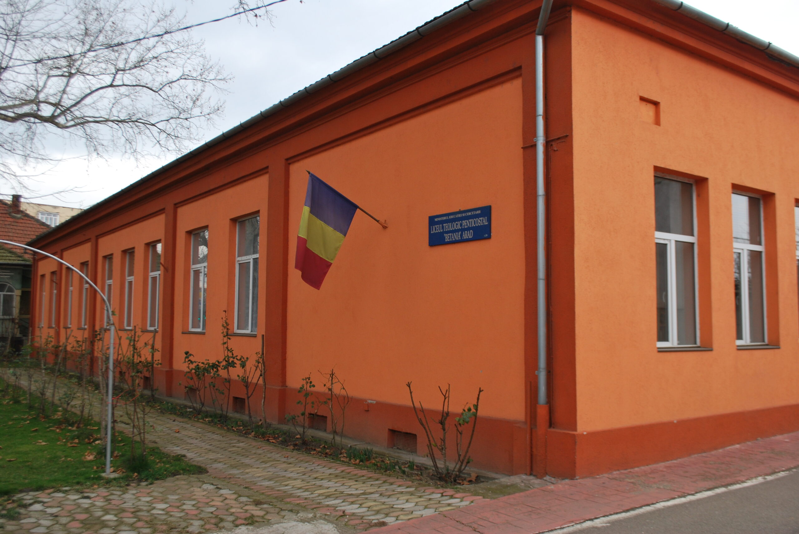
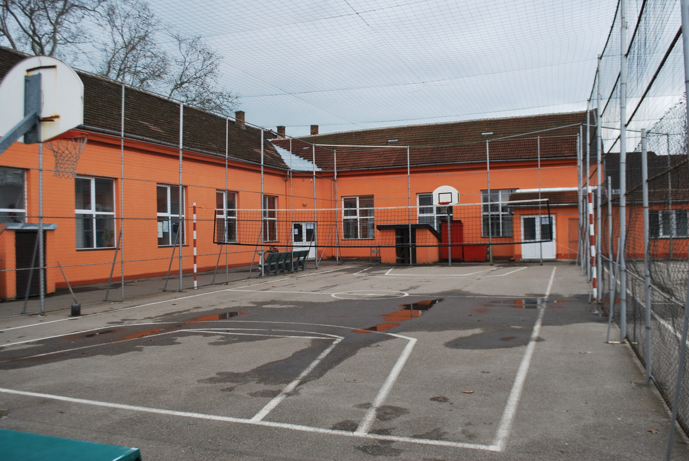
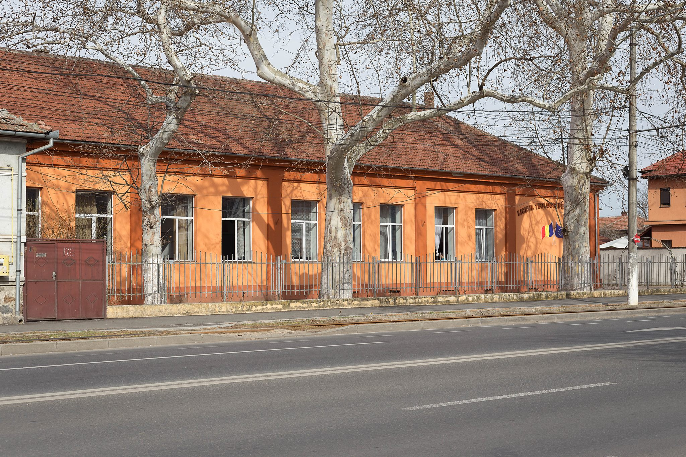

Introducere
Prin Harul lui Dumnezeu este o entitate de învățământ învrednicită, care emană o educație creștină de înaltă ținută spirituală și academică desfășurată sub egida reunită a Cultului Creștin Penticostal și a Ministerului Educației Naționale din România.
Este o oază care adapă sufletul însetat de a-L cunoaște pe Creator și creația Sa; un loc de popas străjuit de lumina care inundă inima și mintea copiilor care au harul de a fi găzduiți aici. Dorim ca Numele Domnului să fie slăvit în veci, iar activitatea liceului să binecuvânteze generația tânără pe urmele Mântuitorului.

1. Viziunea și misiunea liceului
Dorim ca absolvenČ›ii LICEULUI TEOLOGIC PENTICOSTAL ARAD sÄ-Č™i dezvolte personalitatea pe direcČ›iile umanÄ Č™i spiritualÄ, dobândind capacitatea de a aplica principiile biblice ale vieČ›ii creČ™tine, acasÄ, la bisericÄ, la locul de muncÄ Č™i Ă®n societate.
LICEUL TEOLOGIC PENTICOSTAL ARAD asigurÄ:
- o educaČ›ie creČ™tinÄ complexÄ;
- pregÄtirea elevilor pentru a-Č™i folosi abilitÄČ›ile Č™i Ă®ntregul potenČ›ial Ă®ntr-o societate pluralistÄ;
- promovarea unui act didactic de calitate;
- dezvoltarea unei atitudini de slujire faČ›Ä de Dumnezeu Č™i societate;
- armonia realizÄrii individuale cu cerinČ›ele vieČ›ii sociale, pentru integrarea Ă®n Ă®nvÄČ›Ämântul superior sau pe piaČ›a muncii.

2. Parteneriate
Čcoala colaboreazÄ cu parteneri locali, regionali Č™i naČ›ionali pentru dezvoltarea educaČ›iei creČ™tine Č™i profesionale.
Parteneri locali
- Bisericile penticostale din Municipiul Č™i JudeČ›ul Arad: Betania, Izvorul VieČ›ii, Betel, Micalaca, Gloria, Felnac, Vladimirescu, CovÄsânČ›, Čiria, Sicula, ZÄbrani, Sântana, Čag, Tisa NouÄ, Moneasa, SebiČ™, Čimand.
- Comunitatea RegionalÄ PenticostalÄ Arad.
- AgenČ›ia PenticostalÄ de Misiune ExternÄ.
- PrimÄria Municipiului Arad.
Parteneri naționali
- Licee teologice penticostale din România: LOGOS Timișoara, BETEL Oradea, ELIM Pitești, EMANUEL București, Baia Mare, FILADELFIA Suceava, PRO DEUS Cluj-Napoca, LOGOS Bistrița.
- ACSI – AsociaČ›ia InternaČ›ionalÄ a Čcolilor CreČ™tine.
- Asociația „Tineret pentru Cristos”.
- UnitÄČ›i Č™colare Č™i universitÄČ›i din Arad.
- Instituții, asociații, fundații și ONG-uri relevante.

3. ActivitÄĹŁi extracurriculare de referinČ›Ä
Elevii participÄ anual la activitÄČ›i care Ă®ntÄresc spiritul creČ™tin Č™i competenČ›ele personale.
- Corul liceului la Festivalul corurilor liceelor evanghelice din România „Soli Deo Gloria”.
- Participarea unui grup de elevi la ConferinČ›a EuropeanÄ a Liceelor CreČ™tine organizatÄ de ACSI.
- Participarea la Campionatul de fotbal al liceelor evanghelice din România.
- Misiuni creștine în cadrul bisericilor din municipiul și județul Arad.
- Olimpiada NaČ›ionalÄ de Religie – AlianČ›a EvanghelicÄ Č™i Concursul NaČ›ional de Discipline Teologice de Specialitate.
- Proiecte de mobilitate VET în cadrul programului ERASMUS+.
4. Proiecte europene și voluntariat
Școala a derulat proiecte importante de mobilitate și a pus accent pe implicarea comunitară.
- „INFORMATICIENI ROMÂNI PENTRU PIAȚA EUROPEANĂ A MUNCII” – nr. 2014-1-RO01-KA102-001429.
- „PREGĂTIRE PRACTICĂ ÎN FIRME IT EUROPENE - ȘANSE SPORITE DE COMPETITIVITATE PE PIAȚA MUNCII” – nr. 2016-1-RO01-KA102-024067.
Ambele proiecte s-au desfășurat în Granada, Spania, în parteneriat cu firme specializate și au oferit elevilor din clasa a XI-a și a XII-a stagii practice în domeniul informatic.
SNAC – Strategia Națională de Acțiune Comunitară
Din anul școlar 2007-2008 liceul a răspuns inițiativei Ministerului Educației de a încuraja voluntariatul în rândul elevilor.
- Participarea la Centrul de Recuperare Ghiocelul din Arad.
- Susținerea activităților copiilor cu dizabilități alături de personal specializat.
- Trăirea poruncii Domnului de a ajuta pe aproapele în nevoie.
Scurt istoric
Liceul Teologic Penticostal din Arad a fost Ă®nfiinČ›at la propunerea Cultului Penticostal din Romania, de cÄtre Ministerul ĂŽnvÄČ›Ämântului, cu avizul Secretariatului de Stat pentru Culte, prin autorizaČ›ia nr. 5303/18.07.1991, ca unitate de Ă®nvÄČ›Ämânt de stat, având locaČ›ia in ARAD str. Petru RareĹź nr 7. ĂŽnfiinČ›area Č™colii Ă®nainte de decembrie 1989 era imposibilÄ din cauza intoleranČ›ei religioase, iar dupÄ decembrie 1989 a devenit necesitate din cel puČ›in douÄ motive: pe de o parte Ă®n condiČ›iile Ă®n care Comunitatea Penticostala Ă®n Regiunea 5 Vest era numeroasÄ, fiind cea mai numeroasÄ denominaČ›iune religioasÄ creČ™tinÄ neoprotestantÄ din Romania Č™i din Europa, iar pe de alta parte Ă®n oraČ™ul Arad s-au pus bazele Ă®nvÄČ›Ämântului superior teologic penticostal, disciplinele pentru admitere trebuind sÄ se regÄseascÄ Ă®n planurile cadru din Ă®nvÄČ›Ämântul preuniversitar, la un liceu de profil. De la Ă®nfiinĹŁare Č™i pânÄ Ă®n prezent unitatea noastrÄ ĹźcolarÄ pregÄteĹźte elevi pe douÄ filiere: -filiera vocaČ›ionalÄ cu profil teologic Ĺźi specializare teologie penticostalÄ â€“ filierÄ teoreticÄ cu profil real Ĺźi specializare matematicÄ informaticÄ Čcoala are doar ciclu liceal, câte 2 clase pe fiecare an de studiu corespunzÄtor celor doua filiere. ĂŽn structura sa funcČ›ioneazÄ clasele IX-XII cu predare Ă®n limba românÄ, Ĺźcolarizând la forma Ă®nvÄĹŁÄmânt de zi un numÄr de 214 elevi Ă®n cele 8 clase. IniČ›ial Č™coala a funcČ›ionat Ă®n clÄdirea Čcolii Generale nr. 13 pe strada Ardealului din Arad, apoi din anul 1994 s-a mutat la Liceul „Iuliu Maniu” unde a funcČ›ionat pânÄ Ă®n anul 1999. ĂŽn anul 1999 PrimÄria Aradului a repartizat Liceului Teologic Penticostal din Arad o clÄdire pe strada Petru RareČ™ nr.7 care a fost renovatÄ cu sprijinul unor oameni de afaceri din Biserica PenticostalÄ â€žBetania” Arad, dar Č™i al PrimÄriei Municipiului Arad, clÄdire Ă®n care liceul funcČ›ioneazÄ Č™i Ă®n prezent. Asistenta spiritualÄ este asiguratÄ de cÄtre pastorul Č™colii ajutat de cÄtre pastorii care slujesc Ă®n bisericile din Comunitatea RegionalÄ PenticostalÄ Arad.